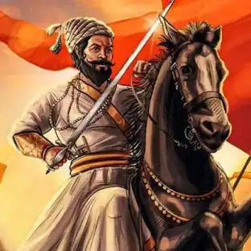
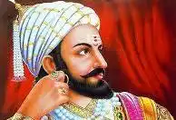
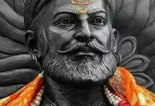

Learn about Rohit Sharma,
Learn about Virat Kohli,
Learn about MS Dhoni.
छत्रपती शिवाजी महाराज



जन्म: १९ फेब्रुवारी, १६३०
जन्म ठिकाण: शिवनेरी
मृत्यू: ३ एप्रिल १६८०
मृत्यू ठिकाण: रायगड
छत्रपती शिवाजी महाराज
शिवाजी शहाजी भोंसले (१९ फेब्रुवारी, १६३० - ३ एप्रिल १६८०), ज्यांना छत्रपती शिवाजी महाराज आणि शिवाजी पहिले म्हटले जाते, हे एक भारतीय शासक आणि भोसले घराण्याचे सदस्य होते. विजापूरच्या ढासळत्या आदिलशाहीमधून शिवाजी महाराजांनी स्वतःचे स्वतंत्र राज्य निर्माण करून मराठा साम्राज्याची स्थापना केली. इ.स. १६७४ मध्ये रायगड किल्ल्यावर औपचारिकपणे छत्रपती म्हणून त्यांचा राज्याभिषेक करण्यात आला.
अफझलखानाशी लढा
शिवाजी महाराजांनी केलेल्या नुकसानांमुळे विजापूर सल्तनत नाराज होती. मुघलांशी शांतता करार केल्यानंतर आणि तरुण अली आदिल शाह दुसरा सुलतान म्हणून सर्वसाधारणपणे स्वीकारल्यानंतर, विजापूरचे सरकार अधिक स्थिर झाले आणि त्यांचे लक्ष शिवाजी महाराजांकडे वळले. १६५७ मध्ये सुलतानने, किंवा बहुधा त्याची आई आणि कारभारी हिने, अफझल खान या अनुभवी सेनापतीला शिवाजी महाराजांना अटक करण्यासाठी पाठवले. शिवाजी महाराजांकडे जाण्यापूर्वी विजापुरी सैन्याने तुळजा भवानी मंदिर, जे शिवाजी महाराजांच्या घराण्याचे पवित्र स्थळ होते आणि हिंदूंचे प्रमुख तीर्थक्षेत्र असलेल्या पंढरपूर येथील विठ्ठल मंदिराची विटंबना केली.
विजापुरी सैन्याने पाठलाग केल्यानंतर शिवाजी महाराज हे प्रतापगड किल्ल्यावर गेले, जिथे त्यांच्या अनेक सहकाऱ्यांनी त्यांना शरण जाण्यासाठी दबाव टाकला. अफझलखान वाईजवळ आला तेव्हा शिवाजीराजांनी सध्याच्या महाबळेश्वरजवळ असलेल्या प्रतापगडावरून त्यास तोंड देण्याचे ठरवले.
दोन्ही सैन्याने आपापसांत अडथळे आणले. शिवाजी महाराज वेढा तोडू शकले नाहीत, तर अफझलखानाकडे शक्तिशाली घोडदळ असूनही वेढा घालण्याच्या साधनांची कमतरता होती. म्हणून तोही किल्ला घेण्यास असमर्थ होता. दोन महिन्यांनंतर अफझलखानाने शिवाजी महाराजांकडे दूत पाठवून किल्ल्याच्या बाहेर एकांतात भेटण्याबद्दल बोलणी चालू केली. तहाची बोलणी सुरू झाली आणि अंतिम बोलणीसाठी शिवाजी महाराजांनी स्वतः यावे असा अफझलखानचा आग्रह होता. पण शिवाजीराजांच्या वकिलांनी (पंताजी गोपीनाथ बोकील) अफझलखानाला गळ घालून प्रतापगडावरच भेट घेण्यास बोलावले.
१० नोव्हेंबर १६५९ रोजी प्रतापगड किल्ल्याच्या पायथ्याशी एका छावणीत दोघांची भेट झाली. प्रत्येकजण केवळ एका तलवारीसोबत सशस्त्र यावे आणि एकच अनुयायी हजर असावा असे ठरवले गेले.
अफझलखान आपल्याला अटक करेल किंवा हल्ला तरी करेल असा शिवाजी महाराजांना संशय होता. एका दशकापूर्वी खानाने अशाच एका भेटीमध्ये एका हिंदू सरदाराला कैद केले होते. त्यामुळे त्यांनी सावधगिरी म्हणून चिलखत चढविले आणि सोबत बिचवा तसेच वाघनखे ठेवली. बिचवा चिलखतामध्ये दडविला होता तर डाव्या हातावर वाघनखे हाताच्या पंजाच्या आतमध्ये वळविलेली असल्यामुळे दिसणार नव्हती. याबरोबरच त्यांनी उजव्या हातात खंजीर घेतला. शिवाजी महाराजांसोबत जिवा महाला हा विश्वासू सरदार होता तर अफझलखानसोबत सय्यद बंडा हा तत्कालीन प्रख्यात असा दांडपट्टेबाज होता. भेटीच्या वेळी उंचपुऱ्या, बलदंड अफझलखानाने शिवाजी महाराजांना मिठी मारली आणि शिवाजीराजांचे प्राण कंठाशी आले. त्याच वेळी अफझलखानने कट्यारीचा वार शिवाजी महाराजांवर केला परंतु चिलखतामुळे शिवाजीराजे बचावले. अफझलखानाचा दगा पाहून शिवाजीराजांनी वाघनखे खानाच्या पोटात घुसवली. त्याचबरोबर अफझलखानाची प्राणांतिक आरोळी चहूकडे पसरली. बडा सय्यद ने तत्क्षणी शिवाजीवर दांडपट्ट्याचा जोरदार वार केला जो तत्पर जिवा महालाने स्वतःवर झेलला आणि शिवाजीराजांचे प्राण वाचले. यामुळेच "होता जिवा म्हणून वाचला शिवा" ही म्हण प्रचलित झाली.
आधीच ठरलेल्या इशाऱ्याप्रमाणे भेटीच्या वेळी तीन तोफांचे बार प्रतापगडावरून काढण्यात आले, आणि खानाच्या छावणीच्या जवळपासच्या झाडाझुडुपांमध्ये दडून बसलेल्या मावळ्यांनी हल्ला करून खानाच्या सैन्यावर हल्ला केला. खानाचा मुलगा फाजलखान आणि इतर काही सरदार लपतलपत वाईच्या मुख्य छावणीपर्यंत आले. इथे खानाचा जनाना होता. ते पाठलागावर असलेल्या नेताजीच्या सैन्यापासून वाचण्यासाठी खजिना, हत्ती व इतर जड सामान टाकून विजापूरला जनान्यासकट पळून गेले.
१० नोव्हेंबर १६५९ रोजी झालेल्या प्रतापगडच्या लढाईत शिवाजी महाराजांच्या सैन्याने विजापूर सल्तनतच्या सैन्याचा निर्णायकपणे पराभव केला. विजापूरच्या सैन्यातील ३,००० हून अधिक सैनिक मारले गेले आणि एक सरदार, अफझलखानाचे दोन पुत्र आणि दोन मराठा सरदार कैदी झाले. विजयानंतर, प्रतापगडच्या खाली शिवरायांनी एक भव्य आढावा घेतला. पकडले गेलेल्या शत्रूंपैकी अधिकारी आणि सामान्य लोक दोघेही मुक्त झाले आणि त्यांना पैसे, अन्न आणि इतर भेटवस्तू देऊन त्यांच्या घरी परत पाठवण्यात आले. कामगिरीनुसार मराठ्यांना बक्षीसे देण्यात आली.
अफझलखानाच्या मृत्यूनंतर त्यांनी त्याच्या शवाचे अंत्यसंस्कार इस्लामी पद्धतीने करून त्याची एक कबर प्रतापगडाच्या पायथ्याशी बांधली आणि त्या कबरीच्या कायम देखभालीची व्यवस्था केली.
अफझलखानच्या मृत्यूनंतर शिवाजीराजांनी दोरोजी नावाच्या सरदाराला कोकणपट्ट्यातील आणखी किल्ले आणि प्रदेश जिंकण्यास पाठवले. स्वतः शिवरायांनी कोल्हापुरापर्यंत जाऊन पन्हाळा जिंकून घेतला. आधुनिक काळात अफझलखानच्या मृत्यूचा हा दिवस शिवप्रताप दिन म्हणून साजरा केला जातो.